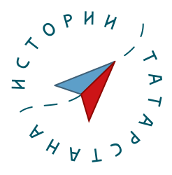

О проекте
«Истории Татарстана» — это уникальный видеогид по республике, с рассказами сотни известных блогеров и известных жителей РТ о 100 самых ярких, важных и любимых ими местах в Татарстане. Вместе с героями видеороликов каждый сможет пройти по маршруту в разных городах и районах РТ, и узнать историю родных мест. Проект приурочен к важной дате, которую масштабно празднует Татарстан в 2020 году - 100-летию образования ТАССР.
Цель проекта — познакомить пользователей соцсетей, сотни тысяч татарстанцев с множеством уникальных мест нашей Республики, рассказать и напомнить важные факты из истории ТАССР, а также наглядно продемонстрировать, как развивается и меняется наша республика – что находилось в конкретных локациях в прежние времена, что находится сегодня — как исторические места вписываются в современное городское пространство.
- 